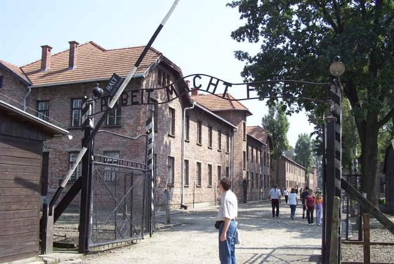

The infamous welcoming gate at Auschwitz, with the inscription Arbeit macht frei (“Work brings freedom”), placed there by Major Rudolf Hoss, the camp commandant, possibly as mockery, a false promise or, it has been argued, as a kind of mystical declaration that self-sacrifice can at least bring spiritual freedom. The same slogan also hung at entrances in other concentration camps, such as Dachau, Gross-Rosen, Sachsenhausen and Terezin. Needless to say, nobody at these camps was ever released for working hard.

Auschwitz: The Camp
Auschwitz: The Gas Chamber
Auschwitz: Personal Belongings
Back to the Auschwitz-Birkenau Page
Back to the Homepage